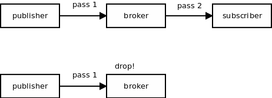
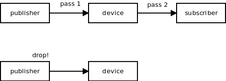
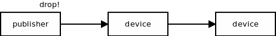
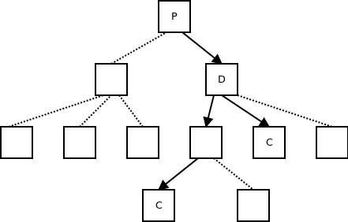
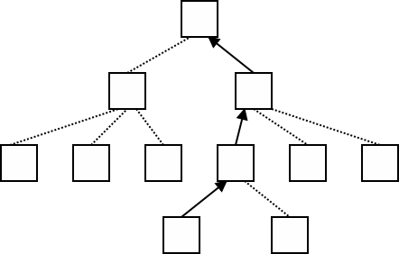
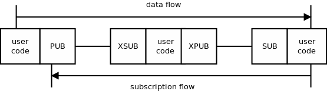
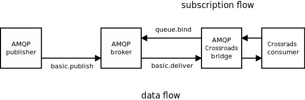

This article was originally written on June 23rd 2011. As there was some discussion of subscription forwarding on nanomsg mailing list, I am republishing an enhanced version of the article it in this blog.
PUB/SUB (publish/subscribe) is a messaging pattern used to distribute data to arbitrary number of subscribers. In context of ØMQ the focus with PUB/SUB is on scalability, ie. on ability to add more subscribers to the system without overloading it.
Aside of the data distribution itself, the main design goal for PUB/SUB subsystem is to minimise the network traffic. Afterall, what PUB/SUB boils down to is multicasting which is notorious for overloading the networks. Thus, the design described herewith is based on the following requirement:
If there's no subscriber for a particular message in a specific portion of the distribution tree the data should not even traverse associated network segments.
While the requirement seems to be self-obvious, it is often not honoured in messaging systems in use today. In most broker-based systems consumers subscribe for messages with the broker, however, there's no way for broker to subscribe for messages with the publisher. So, even if there is no consumer interested in the message it is still passed from the publisher to the broker, just to be dropped there:

What we want to achieve instead is a system where the message nobody is interested in is dropped as soon as possible, presumably even before being sent to the network:

We also want this property to be transitive, ie. even if there are multiple intermediary nodes (brokers, devices) between publisher and consumer, the unneeded messages should still be dropped as soon as possible:

More generically, we want message to travel only through those lattices in the message distribution tree that lead to consumers interested in the message:

Additionally, it would be preferable to pass message through any edge of the graph once only even if there are multiple consumers down that branch of the tree. In other words, message duplication should happen as far away down the stream as possible — in this case in the node D rather than in the node P.
To achieve this kind of design subscriptions have to be passed to the upstream nodes so that the upstream nodes can use them to avoud sending messages to the paths where there are no interested subscribers. The property should be transitive, ie. upstream node should forward the subscription to its parent which in turn should pass it to its parent etc.

So, when consumer application subscribes to a topic the subscription, in addition to applying locally, hops up the stream until it reaches the ultimate producer(s).
The technical difficulty with this model is how to pass the subscription through the intermediate devices. Recall that a device is just a pair of ØMQ sockets connected by user code. Thus, there's no way to implement subscription forwarding in devices without user code taking part in the process. And that's what XPUB/XSUB sockets are for.
XPUB is similar to a PUB socket, except that you can receive messages from it. The messages you receive are the subscriptions traveling upstream. XSUB is similar to SUB except that you subscribe by sending a subscription message to it.
Subscription messages are composed of a single byte, 0 for unsubscription and 1 for subscription, followed by the subscription itself, ie. the prefix we want to check the messages for.
This makes implementation of a device quite simple: Use XPUB/XSUB sockets instead of PUB/SUB, pass all the messages from XSUB to XPUB (data flow) and all the messages from XPUB to XSUB (subscription flow):

To avoid storing stale subscriptions in individual nodes, disconnection of a peer should result in automatic generation all the relevant unsubscriptions to be passed upstream. For example, if XPUB socket has a single peer who subscribed for topic "A", disconnection of that peer should result in generation of unsubscription "A" that will hop upstream until it reaches terminal producer(s).
The other way round, when reconnection happens, XSUB socket should send all its subscriptions to the reconnected peer to reestablish the message flow. Recall that the peer (XPUB) have generated unsubscriptions when disconnection happened. By re-sending the subscriptions the routing tables on the publisher side are renewed and the message distribution continues to work as expected.
Let's assume the subscriptions are correctly distributed within the message distibution tree. Let's now have a look at how they should be used by individual nodes to route the messages downstream.
The routing in (X)PUB socket is pretty straightforward: If message matches any subscription received from a particular peer, send it to that peer. Care should be taken to send the message once only even if it matches several subscriptions.
It's less obvious whether messages should be filtered in the (X)SUB socket. There are three aspects to take into account:
To address these problems, ØMQ filters messages in SUB socket, but not in XSUB socket.
One specific problem with the above model is that it requires bi-directional communication: data are passed one way, subscriptions are passed the other way. Thus, we have to reconcile this model with uni-directional transports such as PGM (reliable multicast).
The solution at the moment is not to forward subscriptions upstream from PGM consumer socket to the PGM publisher. Additionally XPUB socket would send a "subscribe to all" subscriptions upstream once it is bound to PGM transport. That way every message from upstream is multi-casted and filtering happens in the XSUB socket.
This solution is clearly not minimal. Messages are passed on the network even though nobody is subscribed to them. This can be — and often is — considered acceptable with multicast transports. However, if there's need to optimise this scenario further future work can focus on two areas:
There's is one additional scalability bottleneck with the above model.
Imagine the case of global TV broadcast over ØMQ. All the viewers are subscribing to different channels, some of them are changing channels in pretty high rate etc. If all the subscriptions were forwarded all the way up to the ultimate broadcasting server, the server would spend all its time processing subscriptions with no time remaining to broadcast the content itself. Or, more likely, it would collapse under the weight of all the (un)subscriptions coming in.
To make the PUB/SUB model really scalable we have to aggregate the subscriptions in such a way that subscription traffic at each lattice of the distribution tree is roughly the same.
To achieve that we can send just the diffs rather than passing each individual subscription. That way we can ensure that the subscription traffic at publisher won't grow exponentially with depth of the tree. The current implementation does so by eliminating duplicate (un)subscriptions.
Imagine an XPUB socket. Consumer connects and subscribes for messages starting with "A". XPUB socket forwards the subscription upstream. Then another consumer connects and subscribes for "A". This time, XPUB socket increases the reference count on it's internal represenation of the subscription, but doesn't send the subscription upstream — it's already there so why bother?
The other way round, when the first consumer unsubscribes or disconnects, XPUB socket decrements the reference count on the topic, but doesn't forward anything upstream. There's still the second consumer that needs the "A" messages anyway. Only when the second consumer disconnects as well, the unsubscription is sent upstream.
The algorithm above is clearly not optimal and can be improved in the future.
If there an "A" subscription, "AB" subscription is still passed upstream even though it is subsumed by "A". We could simply drop the "AB" subscription and everything would work as expected. We would have to compensate for the optimisation during unsubscription from "A" though. Instead of sending unsubscribe(A) up the stream we would have to send sequence of subscribe(AB) and unsubscribe(A).
You can imagine different optimisations to the aggregation algorithm.
However, the crucial point is that the PUB/SUB protocol is designed in such a way that the actual aggregation algorithm doesn't matter. Every node in the distribution tree can use its own aggregation algorithm and the whole distribution tree would still work as expected. Hopefully, different implementations of scalability protocol can take advantage of the fact and differentiate on the basis of more or less efficient subscription aggregation algorithms.
Imagine the case where producing a message is a CPU-intensive task. Producer would like to eliminate the work in case there's nobody interested in the message. To do that it has to be aware of the subscriptions issued by the downstream nodes.
Luckily, this is exactly what XPUB socket allows it to do. It can open an XPUB socket and start listening for the subscriptions. If a message is about to be generated, the producer will check its list of subscriptions and proceed only if there's an appropriate subscription present.
Another scenario for plugging into subscription mechanism is creating bridges to other messaging implementations, both generic and ad hoc in-house systems.
Let's take an example of ØMQ/AMQP bridge. The bridge can create an XPUB socket to send messages from AMQP to ØMQ. The other way round it can read the subscriptions from the socket and send them as queue.bind commands to the AMQP system:

The same way, bridges can be built to interface with other messaging systems: JMS, STOMP, PubSubHubbub, Redis etc.
Conceptually, I find it useful to think of forwarding subscriptions to publishers as of an optimisation:
In the beginning you have the distribution tree, the messages flow from the publisher to each subscriber. The ultimate subscribers may choose to drop some of the messages. That's how it's implemented in nanomsg at the moment.
Then, some parts of the tree may implement local optimisation by subscriber letting the publisher know that it won't need some messages.
Looking at the problem from this point of view is pretty useful, as it allows us to think of multicast parts of the tree not as some kind of oddity, but rather fully standard nodes which happen not to implement the optimisation.
Sometimes, we don't want to match using a prefix of the message, as it is done in both ØMQ and nanomsg. Instead, we would like to match using regular expressions, SQL-like queries of whatever other matching mechanisms you can think of. This functionality was part of Crossroads (now defunct fork of ØMQ) and should be taken into the consideration when standardising the SP PUB/SUB protocol.
Note that treating the subscription forwarding as an optional optimisation allows the system to ignore subscriptions of unknown types and treat them as "send me everything" subscriptions.
There's one fundamental problem with subscription forwarding:
PUB/SUB allows for multiple publisher/single consumer topologies.
What it means is that the subsription are sent to multiple destinations. At the same time, the mechanism for passing subscriptions has to be fully reliable (losing a subscription is not an option as it would result in faulty business logic).
And as I've tried to explain in many places reliable transmission to multiple destinations is possible only if you accept the fact that a slow/stuck/hung-up destination can cause the whole distribution tree to slow down or grind to the halt.
Obviously, we cannot accept that in PUB/SUB protocol.
There were many solutions for the problem discussed, all of them badly lacking in one or an other way:
One solution that looks like it may work is to limit the number of subscriptions from a single consumer to a small number (say 32) and subscribe to the full message feed if any further subscription is issued.
This article proposes a PUB/SUB system with minimal bandwidth requirements as it is currently implemented in ØMQ/3.0.
The long-term goal is to reconcile this system with systems used by different messaging implementations and standardise it as an SP protocol.
May 4th, 2014